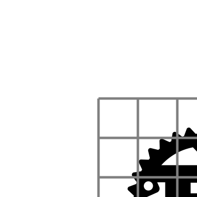
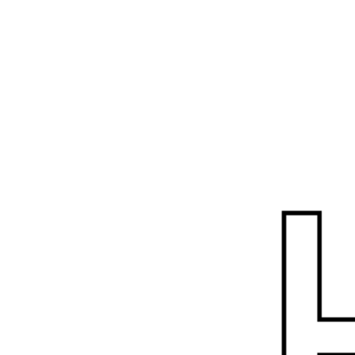
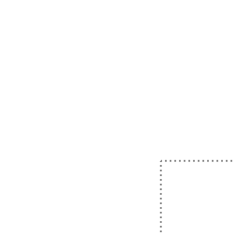

Esche.rs
Exploring functional geometry

Motivation
It was the year 1982 when Peter Henderson, publishes a paper called Functional Geometry. In it he describes an algebra of pictures that allowed him to recreate Escher's Square Limit.
The 2002 reprint of the article inspired Einar Host to give a talk and a workshop.
I was lucky enough to attend that workshop at Booster Conf. I had such a good time that I translated the workshop to Rust.
I hope that you enjoy it as much as I did, when I first learned how to recreate Escher's Square Limit in code.
Grid method
During the workshop we will be relying on a technique well know to painters. It is called the grid method.
Let's explain this method with our tRusted logo.

The first thing we do to our logo is overlay a grid.

Next we draw a second grid, similar to the first.
Now we focus on a single cell in the original grid, and accurately copy it in the corresponding grid in the target grid. Going from top to bottom and from left to right, our first cell is empty. The second cell has a single tooth of the gear. Let's copy it over.
The following cell has some more teeth.
By copying each cell one by one, the original logo is recreated.
until the original is completely copied.
Variations
Once we understand the basics of the grid method, we can start to look for variations. Nobody is restricting you to draw the target grid differently.
Scale
We could scale the grid.
Non-uniform scale
We could scale the grid non-uniformly.
Shearing
We could shear the grid.
Combination
Or we could combine various transformation and apply that to the grid.
Because we will make extensive use of the grid method, and want to easily manipulate the grid, we will introduce a box abstraction.
Box
We learned about the grid method. It allows us to instruct an artist that knows how to copy a picture from a grid, how we want the picture copied. This can be achieved by controlling the grid the artist will copy the picture into. The grid method relies on a box. So we better should get to know our boxes.

Above you find a pictorial representation of a box. It is defined by three
vectors, a, which is red in the picture, b which is orange in the picture
and c which is purple in the picture.
# #![allow(unused_variables)] #fn main() { /// A Box represents the area and position that we will draw in. #[derive(Debug, PartialEq, Clone, Copy)] pub struct Box { /// Determines the origin of the drawing area, used to position the box. pub a: Vector<f64>, /// Determines the x axis of the box. pub b: Vector<f64>, /// Determines the y axis of the box. pub c: Vector<f64>, } #}
The above struct is a literal conversion from the picture. If you are
wondering what these Vectors are, take a look at the
documentation.
Turn

Our goal is to turn our letter through ninety degrees. As explained in the background chapter we are going to do this by rotating the box. This way the picture will be drawn turned automatically.
Here we see our goal box on the right, and the reference box on the left. Let's
figure out the relations between the new box fields a, b and c and the
reference box fields a, b, c.

Notice that for the target box the a field is the sum of the original box a
and b field.

The new b is the original c and the new c is the original b negated.
Implement
Open src/canvas/mod.rs and find the turn_box function. At the moment it is
implemented by calling the identity function on its argument
identity(&bx)
We need to change that and return a turned box. Box has a constructor called
new. When provided with three Vector arguments it will a create a box with
the corresponding fields.
Take a look at the documentation for Vector in order to figure out how to do
vector addition and vector negation.
Having done that, try to implement the turn_box function correctly. You can
test your function by running geometry binary.
cargo run --bin geometry
This should produce an output.svg and if you implemented turn_box correctly
should show the letter d turned.
Flip

Now our new goal is to flip our letter. Just as for the turned picture, we are going to do this by flipping the box. For the next few chapters this will be our goal; finding a target box.
Again, we see our goal box on the right, and the reference box on the left. Let's
figure out the relations between the new box fields a, b and c and the
reference box fields a, b, c.

Notice that for the target box the a field is again the sum of the original box a
and b field.
The new b is the original b negated and the new c is the original c.
Implement
Open src/canvas/mod.rs and find the flip_box function. Just like the
turn_box function before, it is implemented by calling the identity function
on its argument
identity(&bx)
We need to change that and return a flipped box. It is very is very similar to
the turn_box function, so a good start is to copy that body and change it.
Testing your function is a little bit more involved now. Early you could run
geometry binary. Below you can find the main function of the geometry
binary.
# #![allow(unused_variables)] #fn main() { let bx = Bx::new( Vector::new(0f64, 0f64), Vector::new(400f64, 0f64), Vector::new(0f64, 400f64) ); let shapes = letter::d(); let source = create_picture(shapes); let picture = turn(source); let document = to_svg((400f64, 400f64), &picture(&bx)); svg::save("output.svg", &document).unwrap(); #}
The line to look out for is the let picture line. Here we call the function
turn on our source shape. This function is found in the picture module. The
turn function is reproduced here.
# #![allow(unused_variables)] #fn main() { pub fn turn<Picture>(picture: Rc<Picture>) -> Rc<impl Fn(&Bx) -> Rendering> where Picture: Fn(&Bx) -> Rendering{ let p = picture.clone(); Rc::new(move |bx: &Bx| { let turned_box = turn_box(&bx); p(&turned_box) }) } #}
Whoah, look at that signature! It is wild! Take a deep breath, we will look will explain the signature in a moment. The important parts, the part that turns the picture is nicely tucked away.
# #![allow(unused_variables)] #fn main() { let turned_box = turn_box(&bx); p(&turned_box) #}
Here we recognize our turn_box function, returning a turned_box which is
passed as an argument to what ever p is.
There is a lot going on besides that in the turn picture, but a lot of it is
boilerplate. We will explain that shortly. For now just copy the body of the
turn function, replace the body of the flip function with the copy and alter
it to use your flip_box function instead.
This takes care of the flip function, but it still needs to be called. Open
the geometry binary and change the let picture to call flip instead of
turn on the source.
If every thing worked out just fine, you should be able to run geomtry with
the following command
cargo run --bin geometry
and find a flipped letter d in output.svg.
Picture
In the last chapter we looked at the interesting signature of the turn
function. We will repeated it here.
# #![allow(unused_variables)] #fn main() { pub fn turn<Picture>(picture: Rc<Picture>) -> Rc<impl Fn(&Bx) -> Rendering> where Picture: Fn(&Bx) -> Rendering #}
There is a lot going on. There is even a piece of information missing. I.e.
Rendering is a type alias.
# #![allow(unused_variables)] #fn main() { pub type Rendering = Vec<(Shape, Style)>; #}
Let's take some time to think and see what this signature is all about.
Shape & Style
Shape are primitive drawing instructions. Various sort of lines and
instructions where to place them. If you are really curious you can take a look
at the documentation.
The basic shapes are used to provide more abstract drawing instructions such as letters or grids.
Style instructs
an artist with which style to draw the shapes.
We will treat Shape and Style, and their derivatives, as black boxes. We
will use them as is, without further inspection.
Rendering
Single stroke art is a thing, but in general art is made with more elements. A
Rendering is just that, a sequences of shapes drawn with a certain style.
Rendering is a
type alias.
It offers a nice shorthand for a type expression, but is otherwise
interchangeable with the long form.
Here is the definition
# #![allow(unused_variables)] #fn main() { pub type Rendering = Vec<(Shape, Style)>; #}
Picture
Let's take a look at an other alias, this time defined in the signature of the
turn function. For reference we repeat the definition below.
# #![allow(unused_variables)] #fn main() { where Picture: Fn(&Bx) -> Rendering #}
A picture is a function that borrows a box, the one defined a few chapters back,
and returns a Rendering, i.e. a sequence of shapes to draw.
This is the most important abstraction that we will introduce. All following types are in place to make these abstraction usable and safe.
Rc
It you take a look at the type signature of turn you will notice that the
Picture is wrapped in a Rc. It is a
A single-threaded reference-counting pointer.
As can be seen from the Rc documentation.
The reason we need a reference counting pointer to the Picture here is
two-fold.
Picture can not be owned
The first reason we need an reference counting pointer to the Picture is that
we might want to reuse the picture. If you look back at Eschers square limit,
you could see a lot of repetition in the image. As if a stamp is used to create
the collage of fishes.
This means that we can not take owner ship of Picture, because otherwise other
parts of our program can not reuse it.